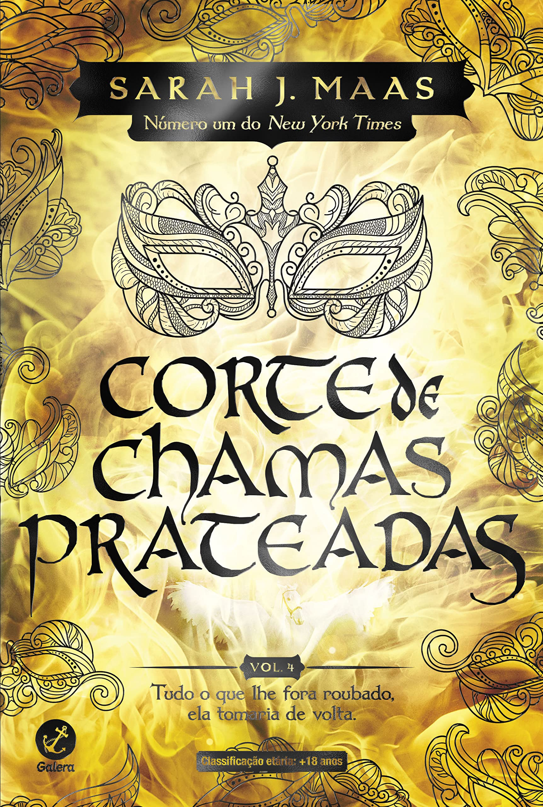
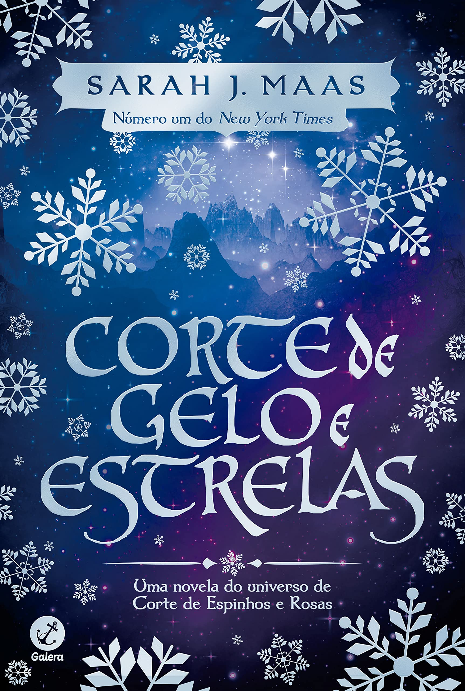
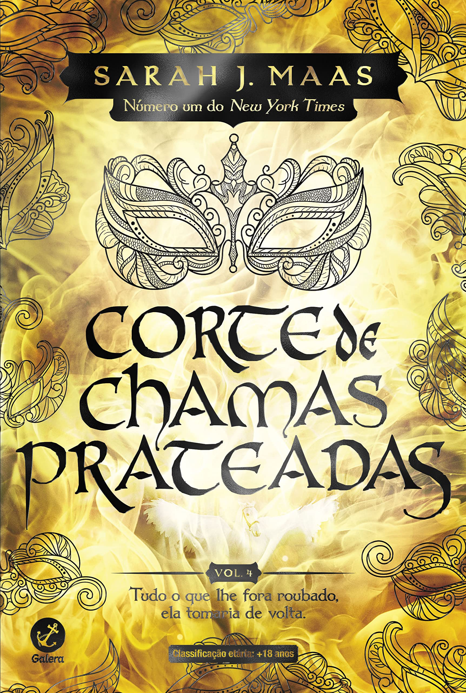
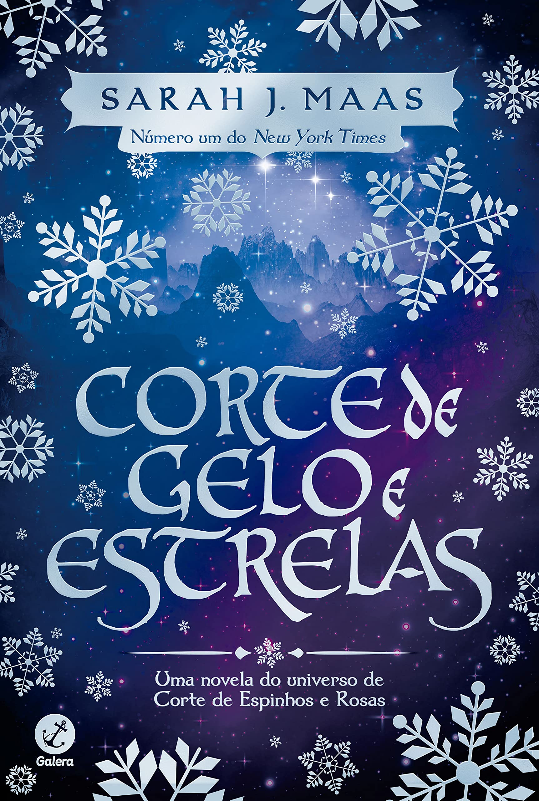

.png)
.png)
Corte de Névua e Fúria
By Sarah J. Mass
Read By
Number of pages: 658 pages
Por amor ela enganou a morte. Por liberdade, ela se tornará uma arma. Corte de névoa e fúria é o esperado segundo volume da saga iniciada em Corte de espinhos e rosas. Sarah J. Maas é uma verdadeira estrela: após apenas uma semana de vendas, a série Corte de Espinhos e Rosas estreou em segundo lugar na lista do New York Times. Ela também é autora da série Trono de Vidro, que já teve mais de 1 milhão de exemplares vendidos. Neste livro, seguimos a saga de Feyre Archeron, que morreu Sob a Montanha. Nas garras de Amarantha, a jovem humana que ansiava por amor e proteção deixou de existir. Das cinzas de seu velho eu, Feyre Quebradora da Maldição foi Feita - com poderes de sete Grão-Feéricos... e uma vontade tão férrea quanto o metal temido por eles. Seu coração no entanto, permanece humano, vulnerável. Incapaz de esquecer o que sofreu para libertar o povo de Tamlin... e o pacto firmado com Rhysand, senhor da Corte Noturna. Mas mesmo assim, Feyre se esforça para reconstruir o lar que criou na Corte Primaveril. Então por que é ao lado de Rhys que ela se sente mais plena? Peça-chave num jogo que desconhece. Feyre deve aprender rapidamente do que á capaz. E curar sua alma partida. Pois um antigo mal, muito pior que Amarantha, se agita no horizonte... um que ameaça não apenas os feéricos, mas o mundo humano e a muralha também. Enquanto navega por uma teia de intrigas políticas, paixões e poder, sufocada por Tamlin, Feyre precisa decidir o que deseja: amor ou liberdade? Corte de névoa e fúria apresenta uma história de emoção absoluta. Feyre aprende como se tornar uma verdadeira guerreira usando as ferramentas que possui. Um novo elenco de personagens dá vida ao reino. Cassian e Azriel - os irmãos de armas de Rhys, o sempre poderoso e charmoso Morrigan e o mortal, sarcástico, Amren. Sarah J. Maas desenvolve a narrativa com tramas tão hábeis que nenhum leitor pode começar este livro sem tentar terminá-lo o mais rápido possível. É cativante, romântico, cheio de ação e um estudo intenso dos reinos em guerra. Um verdadeiro clássico no gênero fantasia.
Quantas estrelas você da para esse livro? Quer fazer um cronograma sobre esse livro? Clique aqui
 


